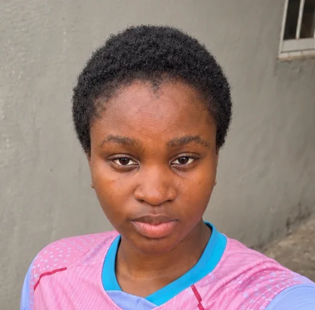

I turn messy ideas into things that make sense.

I'm a product and brand designer in Lagos. For four years I've helped startups and growing teams design products people understand and brands people remember.
How I got here
My journey started with graphic design and visual communication. Over time, I got curious about how people actually use technology, and that curiosity pulled me into UI, UX and product design.
Since then I've worked across product strategy, user research, interface design, branding, web design and community growth. At Aierth Technologies I shaped both the brand and its learning platform: an LMS that made online learning easier to navigate and a beginner-friendly onboarding flow.
I'm also studying Software Engineering, so I understand how products get built beyond the design file. It makes me easier to work with for developers, and my designs more practical to ship.
What it added up to
- 4+years designing products and brands
- 15%less onboarding time at Aierth
- 30%wider market reach at Aierth
How I work.
Expect thoughtful questions, honest collaboration, clear communication, and design decisions that have a reason behind them.
I combine UX thinking with product strategy, so the work solves real user needs, fits the business goals, and survives past launch instead of sitting in Figma.
Education
- B.Sc Software EngineeringMiva Open University
- User Experience and User Interface DesignInstitute of Management, Finance and Technology
Outside the brief
I mentor upcoming designers and enjoy helping them sharpen their thinking. I write about product strategy, make visual content, and turn random ideas into concepts in Figma. I'm probably analysing the experience of every app I open.
Tools I work with
- Figma
- FigJam
- Figma Make
- Figma Motion
- Notion
- Jira
- Canva
- Adobe Creative Cloud
- Google Workspace
- Claude
Let's build something people remember.
Open to product design roles, remote or hybrid, worldwide, and to freelance and contract projects.